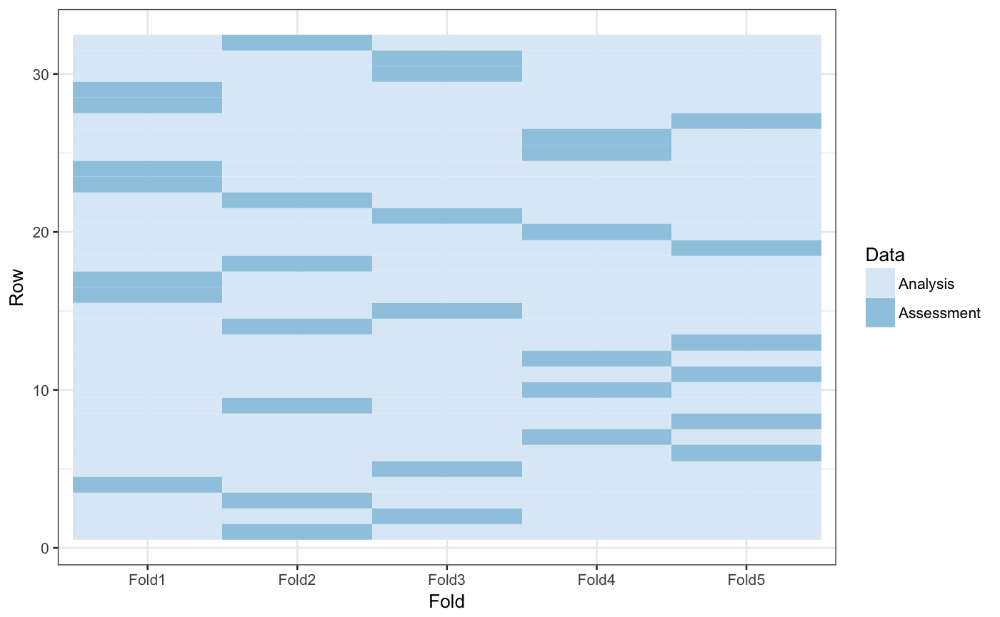
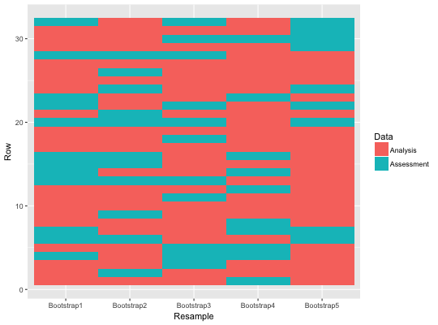
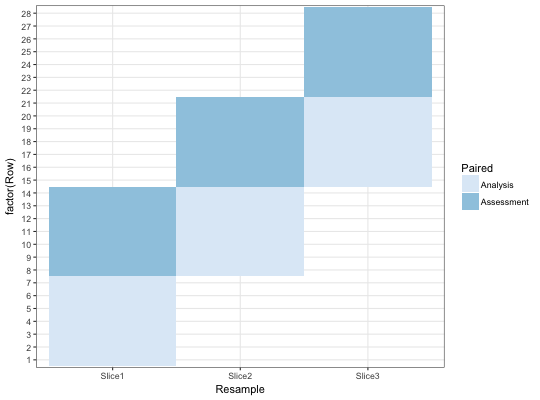

Tidy Resampling Object
The tidy function from the broom package can be used on rset and rsplit objects to generate tibbles with which rows are in the analysis and assessment sets.
# S3 method for rsplit tidy(x, unique_ind = TRUE, ...) # S3 method for rset tidy(x, ...) # S3 method for vfold_cv tidy(x, ...) # S3 method for nested_cv tidy(x, ...)
Arguments
| x | A |
|---|---|
| unique_ind | Should unique row identifiers be returned? For example, if |
| ... | Not currently used. |
Value
A tibble with columns Row and Data. The latter has possible values "Analysis" or "Assessment". For rset inputs, identification columns are also returned but their names and values depend on the type of resampling. vfold_cv contains a column "Fold" and, if repeats are used, another called "Repeats". bootstraps and mc_cv use the column "Resample".
Details
Note that for nested resampling, the rows of the inner resample,
named inner_Row, are relative row indices and do not
correspond to the rows in the original data set.
Examples
library(ggplot2) theme_set(theme_bw()) set.seed(4121) cv <- tidy(vfold_cv(mtcars, v = 5)) ggplot(cv, aes(x = Fold, y = Row, fill = Data)) + geom_tile() + scale_fill_brewer("Paired")set.seed(4121) rcv <- tidy(vfold_cv(mtcars, v = 5, repeats = 2)) ggplot(rcv, aes(x = Fold, y = Row, fill = Data)) + geom_tile() + facet_wrap(~Repeat) + scale_fill_brewer("Paired")set.seed(4121) mccv <- tidy(mc_cv(mtcars, times = 5)) ggplot(mccv, aes(x = Resample, y = Row, fill = Data)) + geom_tile() + scale_fill_brewer("Paired")set.seed(4121) bt <- tidy(bootstraps(mtcars, time = 5)) ggplot(bt, aes(x = Resample, y = Row, fill = Data)) + geom_tile() + scale_fill_brewer("Paired")dat <- data.frame(day = 1:30) # Resample by week instead of day ts_cv <- rolling_origin(dat, initial = 7, assess = 7, skip = 6, cumulative = FALSE) ts_cv <- tidy(ts_cv) ggplot(ts_cv, aes(x = Resample, y = factor(Row), fill = Data)) + geom_tile() + scale_fill_brewer("Paired")